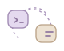

A little company.
For your big ideas.
Your agents are busy. Your notch keeps you in the loop.
Live tasks, useful little details, and a companion by your side.
Different agents. One familiar place.
LESS CHECKING. MORE MAKING.
Keep your flow.
Catch the important bits.
A glance for progress. A click for context.
si-notch brings your agents together without taking over your desktop.
The big picture,at a small scale.
See what is working, waiting, or done. Open a task for messages, tool activity, and subagents — without losing your place.
Feels right at home.
Built for Mac in SwiftUI and AppKit. Keyboard shortcuts, multiple displays, and a place in your menu bar.

Near or far.
Local agents and SSH connections, together. Connect the tools you already use.
A little more context.
Local text history and available usage details. Keep what helps, with limits you control.
USAGE, IN PERSPECTIVE.
See where
your tokens go.
Recorded tokens by task, session and subagent.
Account limits, with time to reset.
Available statistics depend on the connected agent.
SERIOUS WORK. TINY FRIENDS.
Someone’s rooting for you.
Four little personalities, made of pixels.
Hover to say hello. Give one a click and a little affection.
Four si-notch companions. Their mood follows your tasks.
SMALL APP. A NICER DAY.
Your notch has
good company.
Download. Drag to Applications. Connect your agents.
Make a little room for si-notch.
A note about installation
The current app is ad hoc signed and not notarized by Apple. macOS may ask you to allow it in Privacy & Security. Only download from the official GitHub releases. Intel Macs have not been tested.
Read installation details ↗